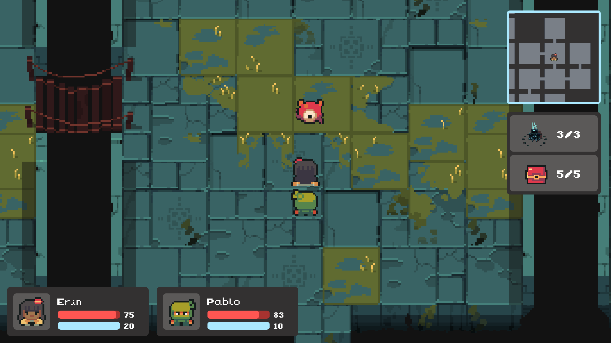

World Navigation AI
Enemy behaviour is driven by a finite state machine with four core states: wander, patrol, chase, and attack. State transitions are based on the player's distance from the enemy.
When the player enters detection range, enemies switch to chase behaviour. If the player enters attack range, combat is triggered and the encounter transitions to the combat screen. All nearby enemies are pulled into the encounter for simultaneous multi-enemy combat.
Navigation uses A* pathfinding based on collision tiles and preferred path tiles, allowing enemies to patrol constrained areas while still responding dynamically to the player.
To maintain performance, pathfinding calculations are distributed across multiple frames using frame allocation, preventing all enemies from recalculating paths simultaneously within the same update cycle.
During chase behaviour, A* pathfinding is further optimised by limiting how often new paths are calculated. A new path is only calculated after a set time interval or when the player has moved beyond a defined distance threshold, reducing unnecessary recalculations while maintaining accurate tracking.

Combat Decision System
Combat AI uses a points-based scoring system to evaluate available actions each turn. Actions are scored based on the current combat state, including enemy health, player health, enemy weaknesses and resistances, and recent player actions.
The highest-scoring action is selected, allowing enemies to choose between attacking specific party members or using healing abilities when available.
A controlled randomisation factor is applied to prevent fully optimal behaviour, ensuring encounters remain fair and dynamic.
The combat UI provides real-time visual indicators showing the active enemy and their selected target, improving readability of turn order and AI decision outcomes during encounters.